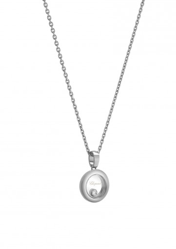
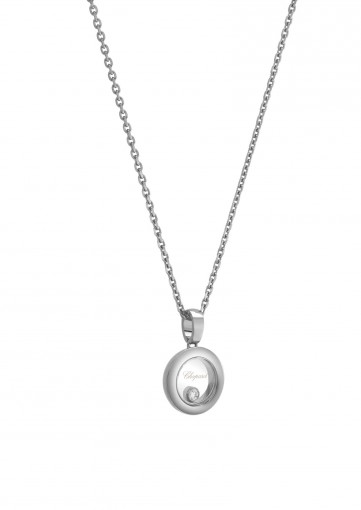

18-CARAT WHITE GOLD AND DIAMONDS
100000 KZT
At the very heart of Chopard's women's jewelry collection, the Happy Diamonds Icons line is as unique as it is playful. Inspired by sparkling drops of water in a waterfall, the 3 freely moving diamonds held between two sapphire crystals on this new round-shaped ring in 18K white gold swirl and dance, creating a delicate and joyful cascade of light.
Phone: 87021478298
Buy